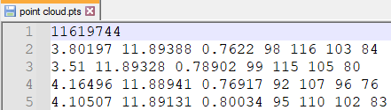

A supported CAD file is a file format that can be imported or exported in R-Pro 2.1.
| Name | Version | Extension | Import | Export |
| 3D Manufacturing Format |
1.2.3 |
.3mf | ✔ | ✔ |
| 3D Studio | All | .3ds | ✔ | ✔ |
| ACIS | Up to 2021 | .sat, .sab | ✔ | ❌ |
| ASCII Point Cloud file | All | .xyz, .pts, .xyzrgb | ✔ | ❌ |
| Autodesk FBX | FBX ASCII: 7100 to 7500. Binary: all. | .fbx | ✔ | ❌ |
| Autodesk Inventor | Up to 2021 | .ipt, .iam | ✔ | ❌ |
| Autodesk RealDWG | AutoCAD 2000-2019 | .dwg, .dxf | ✔ | ✔ |
| Binary point cloud point | All | .bxyz | ✔ | ❌ |
| CATIA V4 | Up to 4.2.5 | .session, .dlv, .exp | ✔ | ❌ |
| CATIA V5 | Up to V5-6 R2021 | .CATDrawing, .CATPart, .CATProduct, .CATShape, .cgr | ✔ | ❌ |
| CATIA V6 | Up to V5-6 2019 | .3dxml | ✔ | ❌ |
| Creo | Elements/Pro 19.0, Up to Parametric 8.0 | .asm, .neu, .prt, .xas, .xpr | ✔ | ❌ |
| I-deas | Up to 13.x (NX5) and NX I-deas 6 | .mf1, .arc, .unv, .pkg | ✔ | ❌ |
| IFC2x | 2 to 4 | .ifc, .iczip | ✔ | ❌ |
| IGES | 5.1 to 5.3 | .igs, .iges | ✔ | ❌ |
| Igrip/Quest/VNC | All | .pdb | ✔ | ✔ |
| JT | Up to 10.6 | .jt | ✔ | ✔ |
| Parasolid | Up to v34 | .x_b, .x_t, .xmt, .xmt_txt | ✔ | ❌ |
| PRC | All | .prc | ✔ | ✔ |
| Revit | 2015 - 2022 | .rvt | ✔ | ❌ |
| Robface | All | .rf | ✔ | ❌ |
| Rhino | From 4 to 7 | .3dm | ✔ | ❌ |
| Solid Edge | 19 to 20 and ST to ST10, 2022 | .asm, .par, .pwd, .psm | ✔ | ❌ |
| SolidWorks | Up to 2022 | .sldasm, .sldprt | ✔ | ❌ |
| STEP | Up to AP 203 E1/E2, AP 214 and AP 242 | .stp, .step | ✔ | ✔ |
| Stereo Lithography (ASCII and Binary) | All | .stl | ✔ | ✔ |
| U3D | ECMA-363 1st, 2nd and 3rd editions | .u3d | ✔ | ✔ |
| Unigraphics (Siemens PLM software NX) | v11.0 to v18.00, up to NX 12, and NX1847 series to NX2007 | .u3d | ✔ | ✔ |
| VDA-FS | 1.0 and 2.0 | .vda | ✔ | ❌ |
| VRML | 1.0 and 2.0 | .wrl, .vrml | ✔ | ✔ |
| Wavefront | All | .obj | ✔ | ✔ |
| COLLADA | All | .dae | ✔ | ❌ |
| GL Transmission Format | Version 2.0 only | .gltf, .glb | ✔ | ❌ |
Notes:
